Supergirl Season Recaps:
Season 1
Kara Zor-El was sent to Earth from Krypton as a 13-year-old by her parents Zor-El and Alura. Krypton was exploding, and Kara's parents sent Kara in a spacecraft to Earth after her cousin. Kara was meant to protect her infant cousin Kal-El, but her spacecraft was knocked off course and forced into the Phantom Zone, where it stayed for 24 years. By the time the spacecraft crash landed on Earth, Kal-El had grown up and become Superman. The series begins eleven years later when the now 24-year-old Kara is learning to embrace her powers and has adopted the superheroic alias "Supergirl".[1]In the first season, Kara is forced to reveal her powers, and becomes National City's protector.[2] Kara discovers that hundreds of the criminals her mother imprisoned are hiding on Earth, including her aunt Astra and Astra's husband Non. Kara works with her adoptive sister Alex Danvers to fight these criminals, alongside the Green Martian J'onn J'onzz, her cousin's friend James Olsen, and tech genius Winn Schott.
Season 2
In the second season, Kara and her allies deal with feuds between Earth's native populace and extraterrestrial community, and investigate the shadowy organization Project Cadmus, masterminded by Lillian Luthor, mother of Lex Luthor. At the same time, Kara befriends Lillian's stepdaughter Lena Luthor, the new CEO of LuthorCorp, and struggles with romantic feelings for recent Earth arrival Mon-El, a princely survivor from Krypton's neighboring planet Daxam whose parents wish to reclaim him. James becomes the masked streetfighting vigilante Guardian; Alex begins dating Maggie Sawyer; and J'onn befriends a younger Martian, M'gann, from the White Martian race that killed his people.
Season 3
In the third season, Kara struggles with the loss of Mon-El after he is forced to leave Earth. When Mon-El returns, he reveals that he has time-traveled to the 31st century and founded the Legion, alongside marrying Imra Ardeen. J'onn discovers his father M'yrnn J'onzz is alive and Alex deals with her heartbreak after breaking up with Maggie. Kara and Alex's new friend, Samantha Arias, is unknowingly another Kryptonian survivor, and begins a transformation from a loving single mother into the world-killing weapon known as Reign, who serves a coven headed by Selena.
Season 4
In the fourth season, Kara deals with a new wave of anti-extraterrestrial prejudice secretly instigated by Lex Luthor from prison, forcing her to fight for the civil and political rights of aliens. Ben Lockwood, a former college professor who suffered a series of personal tragedies at the hands of extraterrestrials, forms a human-first group called the Children of Liberty to end all aliens. Meanwhile, in the nation of Kasnia, a clone of Kara dubbed "Red Daughter" is trained by its military to fight Supergirl at Lex's request. Kara and Alex rival with the DEO's new addition, Col. Lauren Haley, who was sent to monitor the DEO's progress under Alex's direction. Col. Haley and the President try to force Supergirl to reveal her identity, and clash with her and Alex when she refuses.
Season 5
Characters
- Kara Zor-El/Supergirl
- 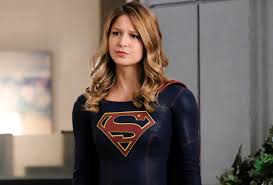
- Alex Danvers
- 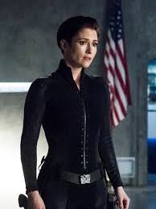
- J'onn J'onzz/Martian Manhunter
- 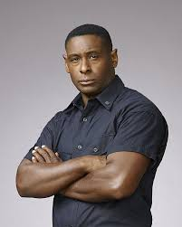
- 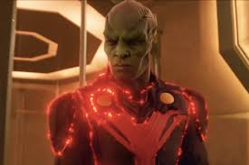
- Jimmy Olsen/Guardian
- Winn Schott
- 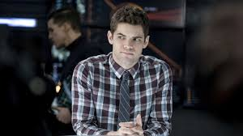
- Cat Grant
- Mon-El
- 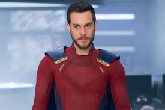
- Lena Luthor

- Lex Luthor
- 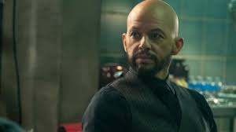
- Samantha Arias/Reign
- 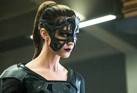
- Querl Dox/Brainiac 5/Brainy
- 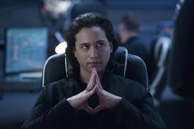
- 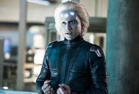
- Nia Nal/Dreamer
- 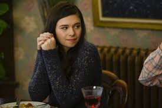
- 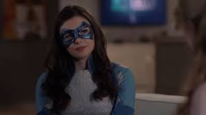
- Jerimiah Danvers
- Eliza Danvers
- Clark Kent/Kal-El/Superman
- 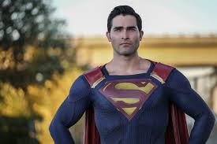
- Lillian Luthor
- 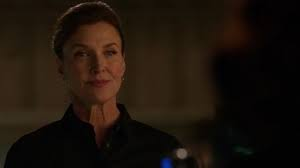